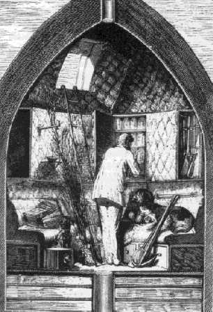

Capítol XXV
DARRERS DETALLS
Era el 22 de novembre.
Al cap de deu dies havia de tenir lloc la partida suprema. Una sola operació
restava encara per a dur a bona fi. Era una operació delicada i perillosa,
que requeria infinites precaucions, i contra l'èxit de la qual el capità
Nicholl havia arriscat la seva tercera aposta. Es tractava, en efecte, de carregar
el Columbiad i d'introduir-hi les quatre-centes mil lliures de cotó fulminant.
Nicholl havia pensat, i potser no sense algun motiu, que la manipulació
d'una tan formidable quantitat de piroxil provocaria una gran catàstrofe,
i que en tot cas aquesta massa eminentment explosiva s'inflamaria per ella sola
sota la pressió del projectil.
Hi havia encara allí altres greus perills augmentats per la despreocupació
i la lleugeresa dels americans, que, durant la guerra federal, ni tan sols deixaren
de carregar llurs bombes amb el cigar a la boca. Però Barbicane tenia
ganes de reeixir i no de naufragar a port. Va escollir els millors operaris
i els féu treballar al seu davant, sense perdre'ls mai de vista, i així,
a còpia de prudència i de precaucions, pogué posar a favor
seu la certesa de l'èxit.
De moment es guardà ben bé prou de fer dur tot el carregament
al clos de Stone's-Hill. N'hi hagué suficient amb fer-lo venir a poc
a poc en caixes perfectament tancades. Les quatre-centes mil lliures de piroxil
havien estat repartides en paquets de cinc-centes lliures, que feien vuit-cents
gruixuts cartutxos confeccionats acuradament pels més hàbils pirotècnics
de Pensacola. Cada caixó en contenia deu i arribaven l'un darrera l'altre
pel ferrocarril de Tampa-Town; d'aquesta manera no hi hagué més
de cinc mil lliures de piroxil en el clos. A penes arribaven, cada caixó
era descarregat per obrers que anaven descalços, i cada cartutx era transportat
a l'orifici del Columbiad, en el qual es davallava per mitjà de grues
mogudes a força de braços. Les màquines de vapor havien
estat allunyades, i els més petits focs apagats a dues milles a la rodona.
Ja n'hi havia prou amb haver de preservar aquelles masses de cotó fulminant,
àdhuc pel novembre, contra l'ardor dels raigs del Sol. Així és
que es treballava preferentment de nit, sota la resplendor d'una llum viva produïda
en el buit i que, per mitjà d'aparells Ruhmkorff, creava un dia artificial
fins al fons del Columbiad. Un cop arribats a baix, els cartutxos eren arrenglerats
amb una perfecta regularitat i relligats uns amb altres per un fill metàl·lic
destinat a portar simultàniament l'espurna elèctrica a cada un
d'ells.
Efectivament, fóra per mitjà de la pila que el foc seria comunicat
a aquesta massa de cotó fulminant. Tots aquells fils, rodejats d'una
matèria aïllant, venien a reunir-se en un de sol per una estreta
lluerna practicada a l'altura on havia d'ésser mantingut el projectil.
Des d'allí, travessant la gruixuda paret de fosa remuntaven fins a la
superfície de la terra per un espirall del revestiment de pedra ja fet
amb aquesta finalitat. Una vegada al cim de Stone's-Hill, el fil, sostingut
per pals i al llarg d'una longitud de dues milles arribava a una poderosa pila
de Bunzen tot passant per un aparell interruptor. N'hi havia prou amb polsar
amb el dit el botó de l'aparell perquè el corrent fos instantàniament
restablert i calés foc a les quatre-centes mil lliures de cotó
fulminant. I ja no cal dir que la pila no entraria en activitat fins al darrer
moment.

L'interior del projectil
El 28 de novembre, els vuit-cents cartutxos eren col·locats al fons del
Columbiad. Aquesta part de l'operació havia reeixit. Però quin
tràfec, quines inquietuds, quines lluites havia hagut de sofrir el president
Barbicane! En va havia prohibit l'entrada a Stone's-Hill. Cada dia els xafarders
escalaven l'estacada, i alguns duien la imprudència fins a la bogeria,
anant a fumar entremig de les bales de cotó fulminant. Barbicane es posava
fet una fúria i J.-T. Maston li feia chor, fent foragitar els intrusos
amb una gran energia i recollint les puntes dels cigars encara encesos que els
ianquis havien llençat d'ací i d'allà. Penosa tasca, car
més de tres-centes mil persones s'empenyien al voltant de l'estacada.
Miquel Ardan s'havia ofert generosament per escortar els caixons fins a la boca
del Columbiad; però, havent-lo sorprès un dia a ell mateix anant
amb un enorme cigar a la boca mentre feia fugir els imprudents, als quals donava
aquest mal exemple, el president del Gun-Club veié que no podia pas comptar
amb aquest intrèpid fumador i el féu vigilar molt especialment.
En fi, com hi ha un Déu per als artillers, no va rebentar res i la càrrega
fou duta a bon terme. La tercera aposta del capità Nicholl era, doncs,
molt aventurada. Només restava introduir el projectil en el Columbiad
i col·locar-lo damunt de la gruixuda capa de cotó fulminant.
Però abans de procedir a aquesta operació, els objectes necessaris
per al viatge foren disposats amb ordre en el vagó-projectil. Eren en
gran nombre i,
si haguessin deixat fer Miquel Ardan, àdhuc haurien ocupat els llocs
reservats als viatgers. Ningú no pot tenir idea del que aquest amable
francès volia portar-se'n a la Lluna. Una vertadera pacotilla d'andròmines.
Però Barbicane intervingué i calgué que es reduís
a l'estrictament necessari.
Diversos termòmetres, baròmetres i ulleres de llarga vista foren
disposats en els estoigs dels instruments.
Els viatgers tindrien curiositat d'examinar la Lluna durant el trajecte, i,
a fi de facilitar el reconeixement d'aquell nou món, s'enduien un excel·lent
mapa de Beer i Moedler, el Mappa selenographica, publicat en quatre fulls i
que passa amb tot dret per ésser una vertadera obra d'art d'observació
i paciència1. Aquest mapa reproduïa amb una
escrupolosa exactitud els menors detalls d'aquesta porció de l'astre
girat devers la Terra. Muntanyes, valls, circs, cràters, pics, ranures
s'hi veuen amb les seves dimensions exactes, llur fidel orientació, àdhuc
amb la seva denominació pròpia, des de la serralada Doerfel i
Leibnitz, en què el seu cim més alt s'aixeca en la part meridional
del disc, fins al Mare frigoris, que s'estén en les regions circumpolars
del Nord. Era, doncs, un valuós document per als viatgers, car així
podrien estudiar el país abans de posar-hi el peu.
S'enduien també tres rifles i tres carrabines de caça del sistema
de bales explosives, a més de la pólvora i el plom en gran quantitat.
-No sabem amb què ens les haurem d'haver - deia Miquel Ardan -. Homes
o bèsties poden veure amb mals ulls que els anem a fer una visita. Convé
prendre algunes precaucions!
D'altra banda, els instruments de defensa personal anaven acompanyats de pics,
càvecs, serres de mà i altres eines indispensables, sense parlar
dels vestits convenients a totes les temperatures, des del fred de les regions
polars fins a la calor de les zones tòrrides.
Miquel Ardan hauria volgut endur-se també un cert nombre d'animals, però
no una parella de cada espècie, car tampoc no veia la necessitat d'aclimatar
a la Lluna serps, tigres, cocodrils i altres animals danyosos.
-No - deia a Barbicane -, però algunes atzembles, un bou o una vaca,
un ase o un cavall, farien molt de bé al paisatge i ens serien d'una
gran utilitat.
-Ja hi convinc, estimat Ardan - responia el president del Gun-Club -, però
el nostre vagó-projectil no és l'arca de Noè. Ni en té
la capacitat ni la finalitat. Hem d'acontentar-nos de romandre en els límits
del que és possible.
Per últim, després de llargues discussions, fou convingut que
els viatgers s'acontentarien de dur-se'n una excel·lent gossa de caça
que pertanyia a Nicholl i un vigorós gos de Terra-Nova d'una força
prodigiosa. En el nombre dels objectes indispensables, s'hi van incloure algunes
caixes de grans i llavors de les més útils. Si haguessin deixat
fer Miquel Ardan, s'hauria endut també alguns sacs de terra per sembrar.
Escollí una dotzena d'arbusts que foren curosament embolcallats amb una
protecció de palla i col·locats en un racó del projectil.
Restava, llavors, la important qüestió dels queviures: calia preveure
el cas en què arribessin en un punt de la Lluna absolutament estèril.
Barbicane ho féu tot tan bé, que va arribar a prendre queviures
per tot un any. Però cal advertir, i això perquè no sorprengui
ningú, que aquests queviures consistien en conserves de carns i de llegums
reduïdes a llur més simple volum sota l'acció de la premsa
hidràulica, i que contenien una gran quantitat d'elements nutritius.
No eren gaire variats, però no es podia ésser exigent en una expedició
semblant. Hi havia també una reserva d'aiguardent que pujava a uns cinquanta
galons2, i una altra d'aigua només per dos mesos.
En efecte, després de les darreres observacions del astrònoms,
ningú no posava en dubte la presència d'una certa quantitat d'aigua
a la superfície de la Lluna. Quant als queviures, hauria estat una insensatesa
creure que els habitants de la Terra no trobarien de què alimentar-se
allí dalt. Miquel Ardan no tenia cap dubte sobre aquest particular. Queda
per descomptat que si l'hagués tingut, mai no s'hauria decidit a partir.
-I, a més - deia un dia als seus amics -, no estarem completament abandonats
dels nostres companys de la Terra, i ells ja tindran cura de no oblidar-nos.
-Certament que no - respongué J.-T. Maston.
-Però com ho enteneu vós, això? - preguntà Nicholl.
-Molt senzillament - féu Miquel Ardan -. ¿Que no estarà
sempre aquí el Columbiad? Doncs bé, cada vegada que la Lluna es
presenti en les condicions favorables de zenit, o si no de perigeu, o sia una
vegada l'any si fa no fa, ¿no podrien enviar-nos obusos carregats de
queviures que nosaltres esperaríem en un dia determinat?
-Hurra! Hurra! - exclamà J.-T. Maston com a home que tenia una idea -,
això està ben dit! Certament, valents amics, nosaltres no us oblidarem!
-Ja hi compto! Així, ja ho veieu, nosaltres tindrem regularment notícies
del globus, i, per part nostra, serem ben malaptes si no trobem algun mitjà
de comunicació per a correspondre amb els nostres bons amics de la Terra!
Aquestes paraules respiraven una tal confiança, que Miquel Ardan, amb
el seu aire determinat i el seu gran aplom, hauria arrossegat darrera seu tot
el Gun-Club. El que ell deia semblava tan simple, elemental, fàcil i
d'un èxit segur, que hauria calgut comportar-se d'una manera mesquina
amb aquest miserable globus de la Terra per a no seguir els tres viatgers en
la seva expedició lunar.
Així que els diversos objectes estigueren disposats en el projectil,
fou introduïda entre els seus envans l'aigua destinada a actuar de ressort,
així com el gas per a il·luminar fou regolfat en el seu dipòsit.
Quant al clorat de potassa i a la potassa càustica, Barbicane, temorós
d'algun retard imprevist pel camí, se'n dugué una quantitat suficient
per a renovar l'oxigen i absorbir l'àcid carbònic durant dos mesos.
Un aparell extremament enginyós i que funcionava automàticament
serviria per a retornar a l'aire les seves qualitats vivificants i purificar-lo
d'una manera completa. El projectil, doncs, ja estava a punt, i no hi havia
més que fer-lo descendir al fons del Columbiad. Operació, d'altra
banda, plena de dificultats i perills.
L'enorme obús fou conduït al cim de Stone's-Hill. Allí poderoses
grues el prengueren i el tingueren suspès damunt del pou de metall.
Fou un moment palpitant. Només que les cadenes s'haguessin trencat sota
aquell pes enorme, la caiguda d'una massa semblant hauria, certament, provocat
la inflamació del cotó fulminant.
Sortosament no hi hagué res de tot això, i al cap de poques hores
el vagó-projectil, descendint a poc a poc dins de l'ànima del
canó, acabava per descansar sobre la seva capa de piroxil, un vertader
edredó fulminant. La seva pressió no tingué altre efecte
que reblar més fortament la càrrega del Columbiad.
-He perdut - digué el capità lliurant al president Barbicane tres
mil dòlars.
Barbicane no volia rebre aquest diner de part d'un company de viatge, però
hagué de cedir davant l'obstinació de Nicholl, que volia complir
tots els seus compromisos abans d'abandonar la Terra.
-Llavors - digué Miquel Ardan -, no tinc més que una cosa a desitjar-vos,
mon brau capità.
-Quina? - preguntà Nicholl.
-Que perdeu les altres dues apostes. D'aquesta manera, estarem segurs de no
quedar-nos pel camí.
1. El dia 26 de maig del 1912, tingué lloc en el
Paranimf de la Universitat de Barcelona la inauguració d'una Exposició
general d'estudis lunars organitzada per la Societat Astronòmica de Barcelona,
de la qual era president el senyor Eduard Fontserè.
Aquella interessantíssima Exposició tingué un èxit
molt gran pel conjunt dels estudis exhibits sobre la Lluna, i durant el temps
que estigué oberta es feren algunes conferències. L'exposició
comprenia: cartografia, dibuixos, relleus, fotografia física i bibliografia.
Entre els molts interessants i valuosos materials que s'hi exposaven hi havia
una col·lecció de treballs clàssics dels dibuixants de
la Lluna, precursors de la fotografia, i entre ells algunes mostres dels treballs
dels astrònoms alemanys Beer i Moedler (o Mädler) del 1837, principalment
per un exemplar del seu famós Mappa Selenographica. Malgrat haver estat
superada aquesta grandiosa obra de la cartografia lunar, per altres mapes més
excel·lents, ben poques i lleus modificacions s'han fet a l'obra de Beer
i Moedler, car és un treball d'un tal caràcter d'acabat i precís,
que els selenògrafs que els precediren se sentiren descoratjats en reprendre
una tasca que consideraren quasi definitivament resolta. (N. del T.)
2. Prop de 225 litres.